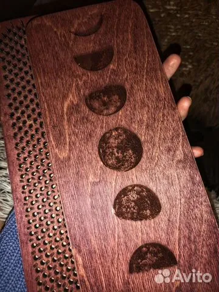

-
Гвоздетерапия
-
Состоит из:
- 1. Формирование намерения
- 2. Выявление блоков, спазмов в теле
- 3. Ментальная и физическая подготовка
- 4. Постановка на гвозди, на желаемый и необходимый уровень, который будет комфортен и принесет пользу в зависимости от поставленной цели. Цель не внешняя, а внутренние перемены, внутренняя работа с индивидуальным подходом
- 5. Переосмысление "боли" перепрограммирование
- 6. Разбор. Анализ
- Продолжительность: 1.5 - 2.5 часа
